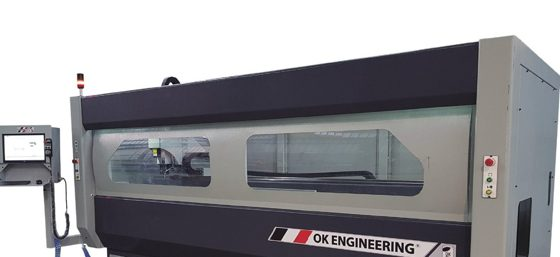

Centro de fresado y retestado CNC
Águila 3700
Centro de mecanizado de 4 ejes para perfiles de aluminio y PVC en barra, con bancada rotativa de +90º a -90º y cambio automático de 7 herramientas.
Centros de mecanizado CNCPrecio a consultar